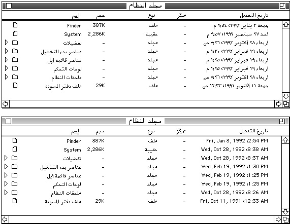

Legacy Document
Important: The information in this document is obsolete and should not be used for new development.
Important: The information in this document is obsolete and should not be used for new development.


Text Manipulation
The Macintosh Operating System and Macintosh script management system implement certain script features transparently. For example, your application may not need to know that its dialog boxes can accept Japanese text. However, if your application actually manipulates the text of any language--as any word processor certainly does--it needs access to text-handling information that varies from script system to script system.For example, to perform word selection and line-breaking, your application may need routines to determine word boundaries in any language. To sort text, it may need routines that sort acording to language-specific rules, and possibly also routines that perform case conversion or strip diacritical marks according to language-specific rules. Do not assume that all languages or regions have the same rules or conventions; use Text Utilities and Script Manager routines to handle different conventions.
Note that the user can affect which of the available script-system resources are used to control text manipulation such as sorting, number formatting, and date and time formatting. See "User Control of Script Settings" beginning on page 1-107.
This section discusses routines that perform a variety of script-aware text manipulations including sorting strings; formatting dates, times, and numbers; analyzing characters; searching and modifying text; and finding word boundaries and line breaks. Most of these topics are described more fully in the chapters "Text Utilities" and "Script Manager" in this book.
- Note
- The script management system does not address all possible localizable text issues. There is other information, not covered in a script's international resources, that may vary from locale to locale--such as formats for addresses, postal zone codes, and telephone numbers. You should place all such information in resources for ease of localization.

Sorting Strings
Comparing strings can be an intricate operation that involves subtle issues. Even for English, determining the sorting order cannot be done by a simple table look-up or comparison of character-code values. Furthermore, sorting rules vary not just among script systems but among the individual languages or regions within a script system.Every script system--and every language-specific variation of a script system--has information specifying how its text is to be sorted. That information is in the script's string-manipulation (
'itl2') resource. The Text Utilities provides routines for comparing two strings for sorting purposes. Some routines work with Pascal strings, others with generalized text strings (defined by pointer and length). Some are script-aware, some are not. The script-aware routines take into account the sorting rules of the current script system or any script system that you explicitly specify, and can address these sorting factors:
Other special cases, such as expansion of abbreviations that requires dictionary lookup, may be beyond the capability of the script management system.
- primary and secondary sorting order
- expansion and contraction of characters
- ignorable characters
- case-conversion and stripping of diacritical marks
In sorting lists of strings that may be from more than one script system, keep these points in mind:
- If you are sorting strings from different script systems into a single list, the ordering relationship among the scripts as well as the sorting rules within each script are important. The script-sorting (
'itlm') resource that is part of system software contains tables that define the sorting relationship among all defined script systems. Text Utilities functions use that information to help you create a sorted list of strings in more than one script system.- If you are sorting strings from different languages within a single script system, you may or may not want to sort the strings into groups by language. If you do, you can determine the ordering relationship between the languages from the the script-sorting resource. Text Utilities functions use that information to help you create a sorted list of strings in more than one language.
- If you need to sort strings in exactly the same way that the Macintosh file system does, there are Text Utilities routines that perform that type of sorting. The sorting order is fixed, and it is independent of any script system or language. It should be used only for operations internal to your application, not for user display of sorted filenames or other text strings.
- Uppercase characters and diacritical marks affect sorting and searching, and conventions for their handling vary among script systems and languages. Text Utilities routines allow you to sort according to the rules of each script or language, and to take into account or disregard case and diacritical marks.
Formatting Dates, Times, Numbers, and Symbols
Dates, times, numbers, and symbols are common types of specialized strings whose formats vary widely around the world. Each script system defines how its times, dates, numbers, and other symbols are to be defined and formatted in its numeric-format ('itl0'), long-date-format ('itl1'), and tokens ('itl4') resources.Dates and Times
Figure 1-58 shows two different Finder displays of the same filenames and modification dates. The upper display uses Arabic date formats, Arabic month names (with theGregorian calendar), Arabic numerals, and a right-to-left primary line direction. The lower display is exactly the same, except with U.S. date formats, English month names, western numerals, and a left-to-right primary line direction. (The changes were made with control panel selections; see "User Control of Script Settings" beginning on page 1-107.)Figure 1-58 Filenames and dates in Arabic and U.S. formats (Arabic system script)
 The Text Utilities include a number of routines for converting and formatting date and time strings on the Macintosh. These routines allow you to specify each element of the date and time formats, including the number of digits used for each numeric element (for example, 3/01/90 or 3/1/90), the names of the months and the days of the week, and other characteristics such as the order of the elements and the use of a.m. and p.m. instead of a 24-hour clock.
Be careful about abbreviating the names of the weekdays (for instance, in English S, M, T, W, Th, F, and S). In Hebrew, for example, the names all begin with the same character, so the English convention would not be useful. Use instead the Text Utilities routines that give you the abbreviated versions provided by each script system.
Multiple calendars may be available on some Macintosh systems. The time-formatting and date-formatting routines in the Text Utilities are generalized enough that they can handle other calendar systems. The Gregorian calendar is the standard Macintosh calendar that is used in most of the world, but other calendars are also supported. See the description of the long-date-format resource in the appendix "International Resources" in this book for a list of defined calendar types.
Numbers and Symbols
Western numerals (1, 2, 3, and so forth) are not universal, and the decimal separator is not always the period. The formats of numbers vary widely. The Japanese writing system, for instance, uses the standard ASCII Western digits, 2-byte encodings of the same Western digits, and 2-byte Japanese number characters in two forms.To accommodate differences in number and currency formats around the world, the Text Utilities provide routines that separate the presentation of numeric values from their internal representation. They allow a script system or your application to define separately how positive numbers, negative numbers, and zero values are presented. They allow you to specify what separators, digits, text annotations, marks (such as + ), and literals (such as brackets or parentheses) can appear in numbers, and what kinds of padding can be used. In addition, they allow you to define how to represent positive and negative exponents for scientific notation. Each script system's numeric-format (
'itl0') and tokens ('itl4') resources contain information used for formatting numbers.Currency formats include the specification of the currency symbol (for example, $, , or DM) and whether it precedes or follows the value. Each script system's numeric-format resource specifies formats for currency.
Use the regional forms of symbols such as the bullet (center dot, ). Tokens that allow you to define these symbols in a language-independent fashion are found in each script system's international resources; use the Script Manager to gain access to those tokens.
- Note
- Units of measure should be appropriate for the region you are targeting. For example, lines per inch is meaningless in the metric world. Units of measurement can be specified as metric or imperial (inches and miles). Each script system's numeric-format resource indicates the preferred measurement unit. You can use the Operating System Utilities function
IsMetricto determine the appropriate unit of measure for the current script system. See Inside Macintosh: OSUtilities.Analyzing Characters
Analyzing characters is another common type of text-manipulation task. The Script Manager provides functions that let you analyze the size and type of individual characters. For example, with script systems that use 2-byte characters, you may need to determine what part of a character a single byte represents. In either 1-byte or 2-byte systems, you may need to know what type of character a particular character code represents. Character-type information is contained in a script system's string-manipulation ('itl2') or encoding/rendering ('itl5') resource.For example, when searching for a single 1-byte character in text that may contain 2-byte characters, it is important not to mistake part of a 2-byte character for the character you are seeking. You can also determine whether a particular character is a letter, number, or punctuation mark, or whether or not it is uppercase. This information can be useful, for example, to filter input into specialized text fields. Also, for example, because several uppercase letters in the Cyrillic and Roman script systems are identical in appearance, you can detect an unwanted mixture of Cyrillic and Roman characters.
The Text Utilities provide a function that locates sequences of Roman characters (or characters of any other subscript) within non-Roman text. Use this routine when you want to separate out Roman characters into their own style runs, so that they can be formatted independently of the surrounding non-Roman text.
Searching, Modifying, and Converting Text
The Text Utilities provide several script-aware routines that you can use to modify the contents of strings or convert text from one form to another. You can use these routines on strings of any script system; the script-specific information they need is in the script's string-manipulation ('itl2'), tokens ('itl4'), encoding/rendering ('itl5'), or transliteration ('trsl') resource.For modifying strings, there are routines to
When searching, note that the text of some script systems can have accents or other diacritical marks that are considered optional. In Hebrew, for example, you may want to give the user the option to have search procedures ignore vowel and cantillation marks, because they are infrequently used in everyday writing. Note, however, that your application would have to provide this capability on its own; the Text Utilities stripping routines do not strip vowel or cantillation marks.
- convert case and strip diacritical marks from characters (such as for sorting)
- truncate a string to make it fit into a specified area on the screen
- search for a character sequence in a string and replace it with a different sequence (accounting for both 1-byte and 2-byte characters)
Different script systems have their own rules for dictionaries and hyphenation references. In searching text, your routines must be able to ignore text from script systems other than those to which the dictionaries and hyphenation references apply. As usual, it is your application's responsibility to track the script system of the text you manipulate; the script management system does not.
If you need to truncate a string, use the regional form of the ellipsis to indicate the truncation; different symbols may be expected in different languages. The Script Manager and the Text Utilities have routines that help you truncate strings and insert the proper symbol for an ellipsis.
Macintosh Human Interface Guidelines has guidelines for implementing intelligent cut-and-paste in your application. If the user cuts an entire word and pastes it in another location or document, you should make sure that the pasted word has proper word delimiters at its new location, and that extra word delimiters are not left at the location it was cut from. Applying intelligent cut-and-paste across all script systems requires complete understanding of word delimiters for each one. The Macintosh script management system does not provide support for this. However, the guidelines presented in Macintosh Human Interface Guidelines can work for any script system that uses spaces as word delimiters, and each script system sets a flag that you can access to determine whether it uses spaces. See the descriptions of script-variable selectors in the chapter "Script Manager" in this book.
Compilers, assemblers, and scripting-language interpreters usually parse sequences of characters to tokens, abstract entities that stand for variables, symbols, and quoted literals. Each script system provides tokenizing information in its tokens resource, for use by the Script Manager. Using the Script Manager you can create tokens recognizable by a parser in any script system.
The Script Manager also provides support for transliteration, the automatic conversion of text from one phonetic form or subscript to another within a single script system. In the Roman script system, this simply means case conversion. In Japanese, Chinese, and Korean script systems, it means the phonetic conversion of characters from one subscript to another. Script-specific information for transliteration is in a script's string-manipulation or transliteration resource. With the Script Manager you can convert, for example, from Hiragana to Romaji and Romaji to Katakana in Japanese; from Bopomofo to Roman in Chinese; and from Roman to Jamo, Jamo to Hangul, Hangul to Jamo, and Jamo to Roman in Korean.
Finding Word Boundaries and Line Breaks
Finding word boundaries for word-selection and for line-breaking is a common, though often difficult, text-manipulation task. Word-selection methods differ among script systems. For example, the Thai script does not use spaces between words; the Thai system must detect word boundaries by parsing. The Text Utilities provide a procedure that you can use to determine word boundaries, in order to support double-clicking, highlighting of search targets, and so on. You can also use the same procedure to find word boundaries for line breaking; see "Text Layout" on page 1-71. The procedure works for all script systems and uses information in the script's string-manipulation ('itl2') resource.